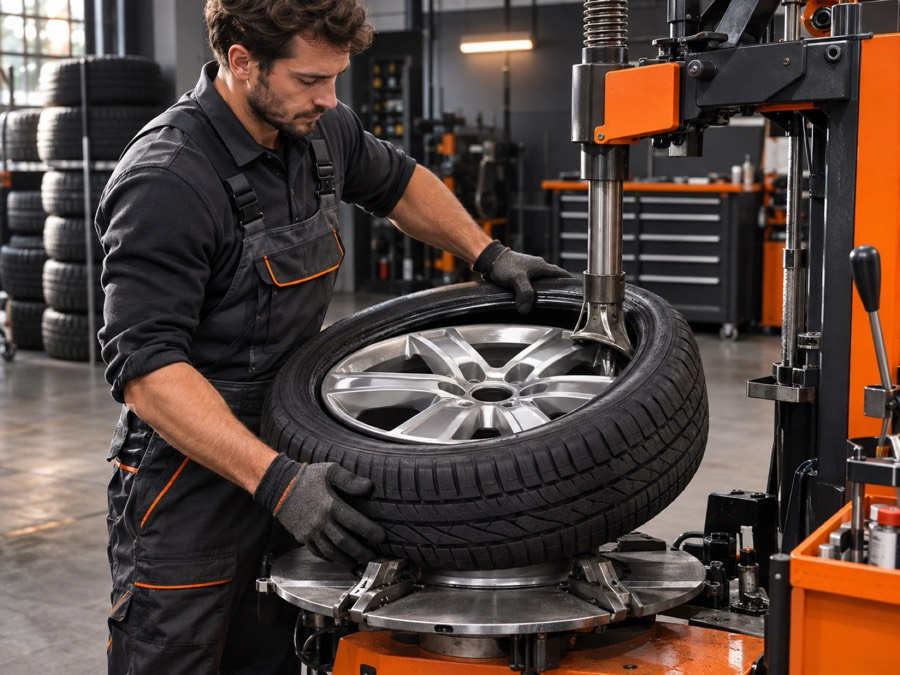

Vulkanizer u Zaprešiću
Zamjena i balansiranje guma, sezonska zamjena kompleta kotača i popravak oštećenih guma, za sve marke i dimenzije.

Zamjena, balansiranje i popravak guma
U Auto Servisu Cvetko obavljamo demontažu i montažu guma s balansiranjem, po kotaču ili za komplet od 4 kotača. Sezonsku zamjenu ljetnih i zimskih guma preporučujemo pravovremeno, dok popravak manjih oštećenja (probušena guma) rješavamo brzo, bez čekanja na novu gumu.
Prilikom zamjene provjeravamo tlak i vizualno stanje profila, kako biste na vrijeme znali treba li razmišljati o novim gumama.
- Zamjena i balansiranje guma, po kotaču
- Sezonska zamjena kompleta kotača (ljeto/zima)
- Popravak oštećenih guma
- Provjera tlaka i dubine profila
- Sve dimenzije naplatka i gume
Informativne cijene
Zamjena guma — po kotaču
Demontaža i montaža gume s balansiranjem, po kotaču.
Sezonska zamjena kompleta kotača — 4 kotača
Zamjena ljetnog i zimskog kompleta uz balansiranje.
Cijene ovise o dimenziji i vrsti naplatka i guma - za konačnu ponudu javite nam model vozila i dimenziju.
Pitate nas
Kada treba montirati zimske gume?
U Hrvatskoj je zimska oprema obavezna u razdoblju od 15.11. do 1.4., a preporučuje se i ranije ako su uvjeti na cesti zimski. Javite se na vrijeme da izbjegnete gužve.
Koliko traje zamjena kompleta od 4 kotača?
Zamjena i balansiranje kompleta od 4 kotača traje tipično 20-30 minuta.
Mogu li popraviti probušenu gumu umjesto zamjene?
Ovisno o veličini i lokaciji oštećenja, manje probušene gume se mogu popraviti. Donesite gumu na pregled za procjenu.